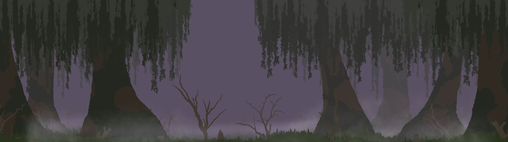
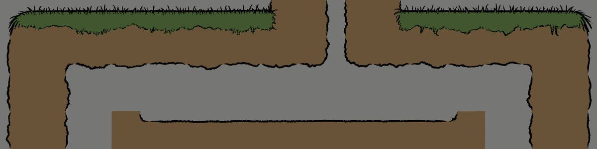
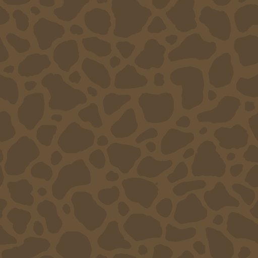
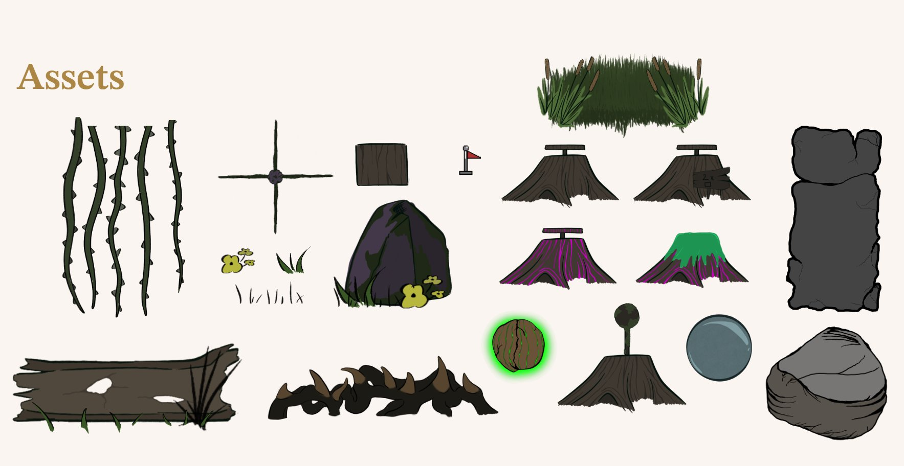

Team Project · University · 2025
Feather and Leap
A co-op game about a stork and a frog restoring their corrupted swamp home.
Unity (C#) · 4-person team
The Game
A co-op game where you play as two best friends, a stork named Feather and a frog named Leap. Toxins have spread through your homeland, and it's up to you to find the Seed of Purification to restore it.
Coding
- Movement mechanics for both characters (Feather and Leap)
- Dynamic camera system that zooms in and out based on how far apart the two characters are
- Feather's attacks: wing gust and beak attack
- Water physics for both characters, plus separate diving and underwater movement for Leap
- Custom water shader and the water movement system
- Rope generator with multiple segments and attached objects, cuttable with Feather's beak attack
- Object physics, so Feather's wing gust can push large boulders
Dynamic Camera System
The camera follows the midpoint between Feather and Leap instead of tracking either character on its own, using smoothed movement so it eases into position rather than snapping there directly. Zoom is calculated from the distance between the two characters: that distance gets normalized against a maximum value, then mapped between a minimum and maximum zoom level, and the camera eases toward that target zoom over time instead of jumping to it instantly. This is what keeps both characters in frame as they move apart — the further apart they get, the more the camera zooms out, up to that maximum distance and zoom level. The camera also adjusts its base zoom for the screen's aspect ratio on startup, so the framing stays consistent across different resolutions instead of only looking right on one screen size.
On top of the regular follow and zoom behavior, the same camera system handles two scripted sequences. The first plays when a door gets unlocked: the camera pans over to the door, zooms in, holds for a couple of seconds so the player can see it open, then pans back to the characters and resumes normal tracking. The second handles level transitions: the camera pans and zooms to a fixed point, holds briefly, then loads the next scene.
Procedural Rope Generator
Ropes appear throughout the game, so rebuilding them by hand would have made level iteration slow and repetitive. I built a procedural rope generator that creates the rope from a small set of inputs.
Ropes get built with an editor tool rather than generated at runtime during gameplay. A Rope Generator script, triggered through a right-click menu in the Unity editor, takes two anchor points and a segment count, then places that many rope segment objects evenly spaced between them. That made puzzle iteration significantly faster and kept rope construction consistent throughout the project.
Water Interaction System
Both playable characters interact with water differently, but they share the same underlying water system. The core system handles water detection, buoyancy, and gravity, while each character builds on that foundation with their own movement behaviors.
The Stork
The Stork is designed to stay at the surface. Its entry speed determines how deeply it sinks before buoyancy pushes it back up, creating a smooth floating motion instead of stopping instantly at the surface. Jumping out of the water temporarily ignores water detection for a short period. This prevents the character from immediately re-entering the water state while its feet are still overlapping the water collider, allowing the jump to transition cleanly back into normal movement.
The Frog
The Frog extends the same system with underwater movement. A second water check above the Frog's head distinguishes between floating at the surface and being fully submerged. That determines whether W triggers a jump or upward swimming. Holding S temporarily overrides buoyancy, allowing the Frog to dive, while vertical and horizontal drift gradually reduce movement instead of stopping it immediately.
Co-op Collision Handling
Since both characters use Unity's Rigidbody2D physics, one character landing on the other could force them deeper into the water than intended. Downward velocity is limited while submerged, preserving physical interaction without allowing collisions to overpower the buoyancy system.
Lighting
Lighting was built around Unity's 2D lighting system (Light2D), layered to reinforce the parallax depth from the background art. Each parallax depth (foreground, midground, middle back, and background) has its own set of 2D spot lights for local lighting, plus a separate global light that adjusts that entire layer as a whole. Spot lights handled specific highlights within a layer, while the global light controlled the overall color and intensity for that layer as a group.
Layering it this way, combined with the parallax movement, reinforced the sense of depth. Distant layers could be pushed cooler, dimmer, or more purple, while closer layers stayed clearer, which helped sell the corrupted swamp atmosphere without flattening everything into one uniform purple wash.
Art Direction & Art
Art Direction
We went for a children's book look, inspired by Frog and Toad. Line art, solid colors, bold silhouettes, and almost no shading. The goal was to make the game feel like you're playing through a storybook.

Background Art
The 2D backgrounds were built to feel like a corrupted swamp: a purple sky, heavy fog, and dead trees. Each element sits on its own layer, and in Unity those layers move at different speeds relative to the character to create a parallax effect. Lighting each layer separately on top of that added depth and contrast between them.


Tile Set
The tile set uses flat colors, broken lines, and minimal detail. The broken lines were a deliberate choice. They let tiles get placed without needing perfect edge matching, while still keeping the art style consistent.
I built the tile set out of three layers made in Photoshop: a combined line art and grass color layer (the outer edges and grass fill together as one piece), a separate earth solid color layer, and an earth secondary pattern for dirt detail. The combined line art and grass layer and the earth layer became two tile palettes in Unity, with the line art and grass palette stacked on top of the earth palette, so its line art outlines the earth sections beneath it too.
For the dirt detail, I first tried hand drawing it directly into each earth tile piece. That didn't scale. Since tiles get mixed and matched freely, a pattern baked into individual pieces only looks right in specific combinations. So instead, the earth secondary pattern is applied as a material overlay on top of the earth tile palette, rather than being its own palette or drawn into individual tiles. That keeps the dirt detail consistent across any combination of earth tiles, and keeps it confined to the ground layer.
This layered setup gave precise control over how each part of the overlay behaved. The dirt detail only ever applies to the ground, without bleeding into the line art and grass layer above it. It also meant that when pieces didn't line up exactly while placing a level — like dirt color peeking slightly past its line art boundary — it just read as part of the children's book style instead of a visible error. A perfect imperfection, not something to fix.

Props & Interactables
Interactive objects were designed to fit the swamp setting: pressure plates and levers built into tree stump bases, boulders as movable objects, vines for hanging objects, and spiked vines and thorns as obstacles.